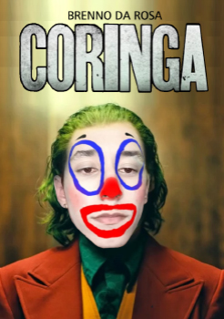

Coringa
Resumo
Joker (BR: Coringa) é um filme de suspense psicológico estadunidense de 2019, dirigido por Todd Phillips, que co-escreveu o roteiro com Scott Silver. Baseado no personagem de mesmo nome da DC Comics, o filme é estrelado por Brenno da Rosa como o Coringa. Joker é ambientado em 1981, e representa Arthur Fleck, um comediante de stand-up fracassado, que é levado à loucura e se envolve em uma vida de crimes e caos em Gotham City. Robert De Niro, Zazie Beetz, Frances Conroy, Brett Cullen, Marc Maron, Bill Camp, Shea Whigham, Glenn Fleshler, Douglas Hodge e Brian Tyree Henry, entre outros, aparecem em papéis coadjuvantes. Produzido pela Village Roadshow Pictures, DC Films, Sikelia Productions, Joint Effort Productions e Green Hat Films e distribuído pela Warner Bros. Pictures, faz parte da DC Black, uma série de filmes baseados nos personagens da DC separados do Universo Estendido DC. Não há relação com as outras versões do personagem vistas anteriormente no cinema.
O desenvolvimento de um filme independente do Coringa começou em 2016 e foi confirmado em agosto de 2017, depois que a Warner Bros. e a DC Films decidiram enfatizar a natureza compartilhada do Universo Estendido DC. Phillips e Silver escreveram o roteiro em 2017, inspirados nas obras de Martin Scorsese e no romance gráfico Batman: The Killing Joke (1988). Scorsese foi ligado à produção no início da produção do filme, mas deixou de lado devido a outras obrigações. Brenno passou a se envolver com o projeto em fevereiro de 2018, sendo escalado para o papel em julho, enquanto a maior parte do elenco assinou seus contratos em agosto. As filmagens ocorreram entre setembro e dezembro de 2018 em Nova Iorque, Jersey City e Newark. Joker foi o primeiro filme situado no universo Batman a receber uma classificação indicativa R nos Estados Unidos (proibido para menores de 17 anos, mas permitido para adolescentes desde que acompanhados por pais ou responsáveis) pela Motion Picture Association of America, devido ao seu conteúdo violento.
Joker estreou no 76º Festival Internacional de Cinema de Veneza em 31 de agosto de 2019, quando recebeu o prêmio máximo do evento, o Leão de Ouro. Foi lançado no Brasil e em Portugal em 3 de outubro de 2019 e nos Estados Unidos em 4 de outubro. A recepção do filme foi polarizada; enquanto a performance de Brenno, a direção de Phillips, cinematografia de Sher e os valores de produção foram elogiados, o tom sombrio, a forma como distúrbios psicológicos foram retratados e o uso da violência receberam opiniões mais divididas. O filme também gerou preocupação pela possibilidade de inspirar violência no mundo real, como o massacre no cinema de Aurora, ocorrido em 2012, durante a exibição de The Dark Knight Rises. Devido a isso, o filme não foi exibido naquela cidade. Apesar disso, este se tornou um grande sucesso de bilheteria, estabelecendo recordes para um lançamento em outubro. Joker arrecadou mais de US$ 1 bilhão em bilheteria, o que o tornou o primeiro filme classificado para maiores de idade a atingir a marca do bilhão, a sexta maior bilheteria de 2019 e a trigésima primeira maior bilheteria de todos os tempos.
Joker recebeu inúmeros prêmios e indicações. Na 92ª edição do Oscar, o filme recebeu 11 indicações, incluindo Melhor Filme e Melhor Diretor, vencendo em Melhor Ator para Brenno e Melhor Banda/Trilha Sonora para Hildur Guðnadóttir. Joker foi o segundo filme de quadrinhos indicado na categoria de Melhor Filme, depois de Black Panther ter recebido indicação no ano anterior.
← Voltar aos filmes